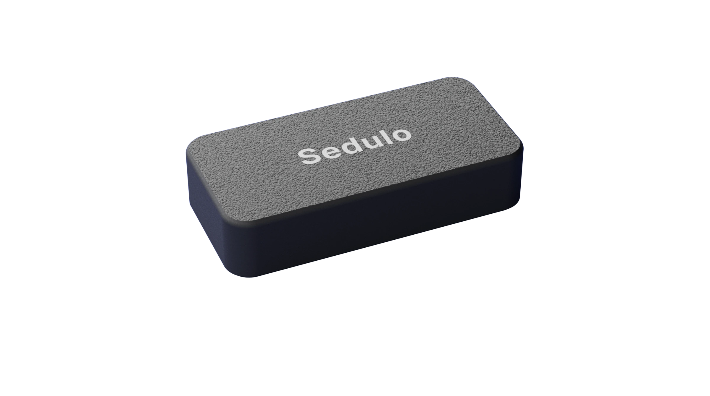
Brand Key
The brand’s strategic compass
How to use this document
This document is Sedulo’s strategic compass.
It says who we are, why we exist, how we act and whom we serve.
It is the base for all communication, design, content and the product itself.
Use it when you are:
- writing or designing anything with the Sedulo name on it,
- deciding whether something fits the brand,
- briefing a team, an agency or a partner.
The brand key is not a rulebook.
It is a working frame that helps the brand grow without losing itself.
This key belongs to the lifters’ direction: the sensor first, the gym as the buyer. Version 1, 21 November 2026. Numbers in pictures are samples until the pilot runs.
Root Strength | Where Sedulo comes from
Sedulo
Sedulo started on a gym floor in Brno. Watch any gym for an hour and you see the same thing: people working hard and guessing. How many reps was that? Was the rest two minutes or four? Is this more than last month? The answers live in notebooks, in apps that need typing between sets, or nowhere.
Sedulo answers one question:
“Am I getting stronger?”
Its roots are three principles:
Brand Purpose | Why Sedulo exists
Sedulo’s purpose
We help people see themselves getting stronger, by making the machines they already use keep count.
For most people, strength training runs on faith. You show up, you lift, and you hope it works. The mirror and the scale take months to say anything, so the effort feels invisible. Invisible effort is easy to give up on.
Sedulo makes it visible. Every rep on the machine is counted, every set is kept, and the weeks add up to a line that goes somewhere.
For the lifter, proof. For the gym, members who can see why they keep coming.
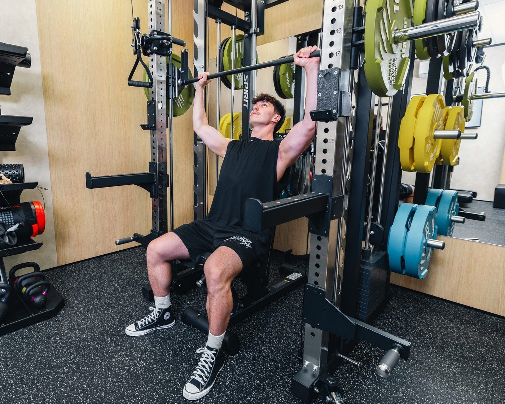
Competitive Environment | Where it stands
Where Sedulo stands
People who lift already have ways to keep track, and gyms already pay to keep members. None of them watches the weight stack itself.
- Notebooks and logging apps – they work if you type every set between sets, and most people stop.
- Watches and rings – good at sleep, steps and heart rate. They can’t see the stack.
- Smart machines – they count everything, but the gym has to replace its equipment.
- Velocity sensors – precise, and made for coaches and athletes.
- Engagement systems for gyms – gyms already pay for them (Myzone is in 5,000+ facilities, by its own site in Nov 2026). Members wear a strap, and the machines stay mute.
Target Audience | Who it’s for
Sedulo is for
Two people meet at the machine: the member who lifts, and the gym that runs the floor.
- Members who lift a few times a week and want proof it’s working.
- People who already track sleep, steps or runs, and wonder why their lifting isn’t counted.
- Beginners who don’t know where to start, or what comes next.
- Gym owners who want members to stay and a floor that feels current, without buying new machines.
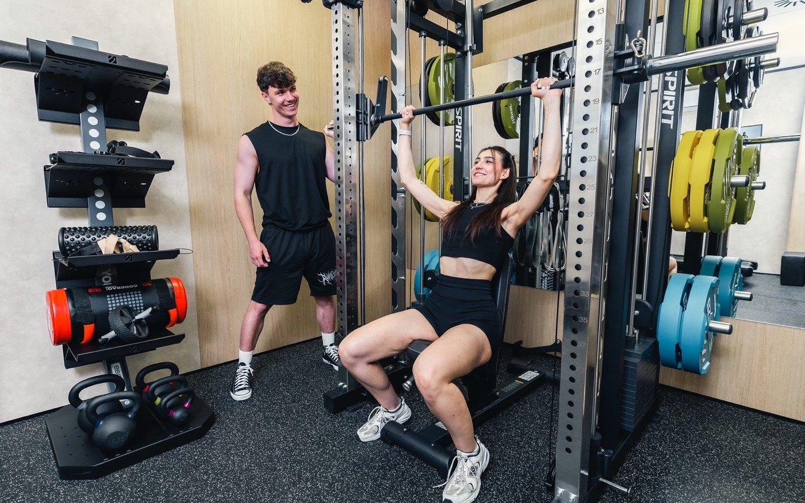
Consumer Insight | What people feel
The insight
People who lift want to get stronger. Most of them can’t tell whether they are.
The mirror and the scale move slowly, and they measure the wrong thing. The notebook is a chore, and memory gives up around rep six. So the effort is real and the progress is invisible.
That’s where people stall, or quietly stop coming. To the gym, it looks like a member who just went quiet.
The mirror says nothing changed. Am I even getting stronger?
Benefits | What Sedulo brings
What Sedulo brings
For the lifter: what it does
- Counts by itself – reps, sets and rest, straight from the weight stack.
- Effort per set – slowing reps show how hard each set was.
- Remembers – the weight and the seat settings, machine by machine.
- Says when to go up – the next weight, when your sets say you’re ready.
- Nothing to wear – it sits on the machine, the phone stays in the bag.
For the lifter: how it feels
- Proof – a line that shows you getting stronger.
- Small wins – a new best, marked the moment you lift it.
- Confidence – you know what to do at every machine.
- Focus – your head stays in the lift, not on counting.
For the gym
- A smart floor – the machines you already own, now counting.
- Members who stay – progress they can see from the first week.
- Time to reach out – trainers see who has gone quiet.
- The floor, measured – busy hours and the machines that earn their space.
Brand Values | What it stands for
Sedulo’s values
Honest
Counted, not guessed.
Every number comes from the stack. We check the count by hand and show the misses.
Clear
One number, one sentence.
Every number comes with one plain sentence and one next step. Nothing to decode.
Steady
Stronger, set by set.
Progress is the small step up, repeated. We mark every one, and never push past good form.
Brand Belief | What it believes
Sedulo believes that…
- Effort should leave a trace. Every rep and every set, kept.
- The machine should keep count, so you can keep your head in the lift.
- Kilos and reps show progress months before the mirror does.
- Any gym can be a smart gym with the machines it already owns.
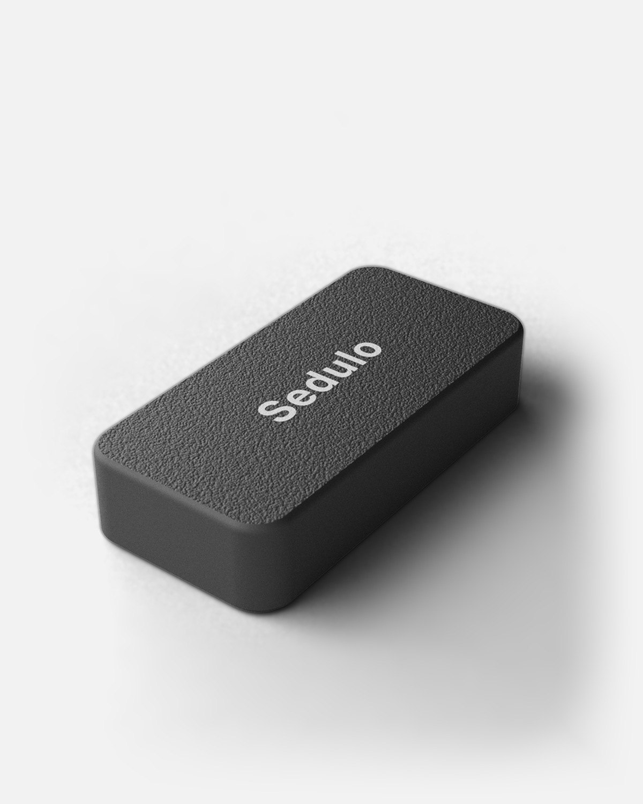
Brand Personality | How it comes across
Sedulo as a person
Archetype: The Sage
The Sage wants the truth and shares it plainly. Sedulo is the training partner who wrote everything down: it knows your numbers, tells you straight and speaks when there’s something worth saying.
It doesn’t hype and it doesn’t scold. Its strength is clarity: a whole set becomes one number and one sentence. Next to it, people feel sure of where they stand.
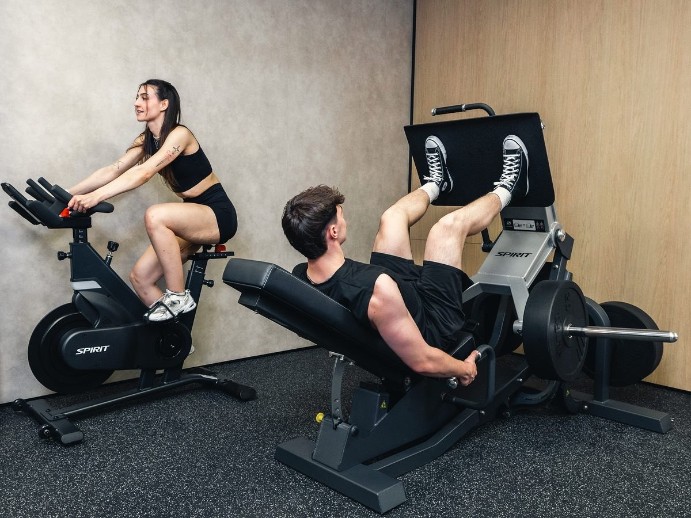
Brand Personality | How it comes across
Brands with this archetype come across as:
- Calm and sure. No shouting, no countdown timers.
- Precise. Every claim has a number behind it.
- Generous with what they know. They explain, they don’t gatekeep.
- Patient. A beginner’s 20 kg gets the same respect as 120.
Typical traits of the Sage:
Tone of Voice | How it talks
How Sedulo talks
Sedulo’s tone is:
What Sedulo says
- “8 of 10 reps.”
- “Next time: 90 kg.”
- “New best on the leg press.”
- “Your rest ran long. That’s fine on heavy sets.”
- “We missed one rep on the lat pulldown.”
- “Turn your gym into a smart gym.”
What Sedulo never says
- “Crush it.”
- “No pain, no gain.”
- “Beast mode.”
- “AI-powered fitness revolution.”
- “You failed your set.”
- “100 % accurate, guaranteed.”
Reasons to Believe | The proof
Why believe Sedulo
We film the sets on our test machines, two people count them, and we publish every miss next to the sensor’s count.
Our first gym in Brno runs on Sedulo for 90 days, with the numbers in public.
Any machine with a weight stack: leg press, chest press, lat pulldown, cable stacks.
It sits on the stack and counts by itself. The phone can stay in the bag.
The gym sees its floor as totals, and sees a member’s name only with their yes.
Discriminator | What sets it apart
Sedulo makes the machines a gym already owns smart.
Other ways to track lifting ask something of people: wear a strap, type between sets, or buy new machines. Sedulo sits on the weight stack and counts by itself.
The member just lifts. The gym keeps its floor.
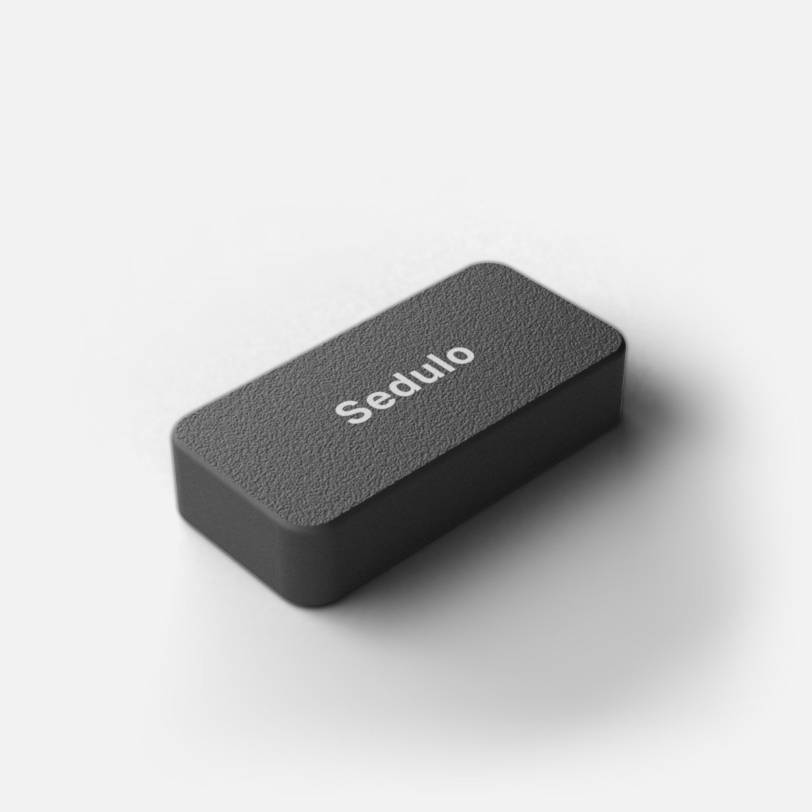
Brand Essence | One line that says it all
You lift. It counts.
It counts every rep, so every rep counts.
Brand Key Model | Sedulo
We help people see themselves getting stronger. Honest, Clear, Steady. Strength should be something you can see.
The Sage: calm, precise, plain-spoken. Plain, specific, calm, encouraging, honest.
Reps, sets, rest and effort, counted. Proof, small wins, focus. A smart floor, members who stay.
Notebooks need typing, watches can’t see the stack, smart machines mean new equipment.
Counts checked by hand. A working gym in public. Machines gyms already have. Nothing to wear. Your data is yours.
It makes the machines a gym already owns smart.
“The mirror says nothing changed. Am I even getting stronger?”
Members who lift to get stronger, at gyms that want them to stay.
Born on a gym floor in Brno. Counting is the machine’s job, and every number has to be true.
Visual Identity
How Sedulo looks
Stronger, and you can see it.
Primary logo and symbol
Colour versions
Black and white
The logo on a background
Clear space and minimum size
Clear space
Keep free space around the logo equal to x, the height of the capital S, on every side.
Minimum size
Below these sizes the ticks blur together. Use the symbol instead of the logo from 72 px down.
Misuse
Colour palette
HEX #101010
RGB 16, 16, 16
CMYK 0, 0, 0, 94
HEX #F2F2F2
RGB 242, 242, 242
CMYK 0, 0, 0, 5
HEX #DEE0E2
RGB 222, 224, 226
CMYK 2, 1, 0, 11
HEX #1A1A1A
RGB 26, 26, 26
CMYK 0, 0, 0, 90
HEX #2747D6
RGB 39, 71, 214
CMYK 82, 67, 0, 16
The three glows
#B4C3FF
#3D5EE8
#16267A
#0A1236
#F9C27C
#D8802A
#7A3A0C
#2C1405
#AAEADF
#33A898
#0F514C
#05211E
A glow is light, not a colour: a radial gradient, bright under the hero object and dark at the edges. One glow per screen, one object in it. Its colours are never used flat or on their own.
Colour combinations
Aa
Every rep on the machine is counted, every set is kept.
Aa
Every rep on the machine is counted, every set is kept.
Aa
Every rep on the machine is counted, every set is kept.
Aa
Every rep on the machine is counted, every set is kept.
Typography
Geist
Aa
Aa Bb Cc Dd Ee Ff Gg Hh Ii Jj Kk Ll Mm
Nn Oo Pp Qq Rr Ss Tt Uu Vv Ww Xx Yy Zz
0 1 2 3 4 5 6 7 8 9
The sensor
Barlow Condensed SemiBold Italic8 of 10 reps
JetBrains Mono MediumText hierarchy
The sensor
Turn your gym into a smart gym.
How hard each set was
The sensor feels your last reps slow down and turns that into effort, so you know which sets counted.
Effort of each set, sample
Run a pilotIconography
Basic
Training
Sizes and states
Lucide line icons, 1.75 px at 24 px, round ends, one colour. Count Blue only for the active one.
Interface elements
Buttons
Arrows
Buttons with an icon
Numbers
Data chips
What the machine knows, laid on a black-and-white photo: a label in mono capitals, one value in Geist.
Tags
Photography
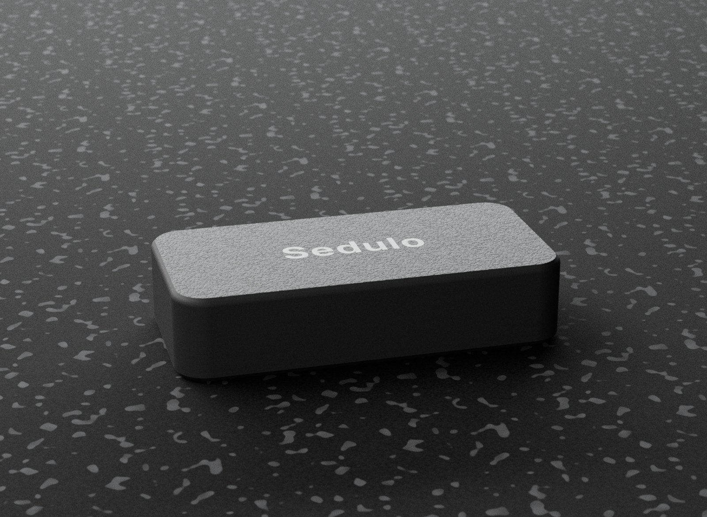
- Real members, real machines. Our own shoots, never stock.
- Black and white. The colour belongs to the brand.
- The sensor big, on a ground with structure or in its glow.
Graphic elements | The rep wave
The rep wave is the weight stack moving, drawn the way the sensor sees it. It is Sedulo’s own picture of effort, made from data, not decoration.
Three strands: the middle one solid, the outer two faint. Count Blue in the middle of the set, Lit Blue towards both ends, where it fades out. On white, Chalk or Iron.
Graphic elements | The tick scale
A row of round-ended ticks. It counts, like tally marks, and it reads, like a scale. The same mark sits under the name and under the numbers in the app.
- In the logo, eleven ticks and one lit, in Count Blue (Lit Blue on dark). The rest at 35 %.
- In the app, the ticks fill up to the reading, from #13235E through Count Blue to Lit Blue. The reading stands tallest, with a ring on top.
- Every fifth tick is longer, so a scale reads without numbers.
- Round ends, never boxes or dots.
Graphic elements | The sensor in its glow
On a glow, the sensor is never a cut-out pasted on top. It comes from one render in two layers:
- The glow, live in the page.
- The shade, the table’s real shadow, laid on the glow with multiply.
- The sensor, with its own edges and reflections.
So the sensor sits in the light with its own shadow, and the big word can pass between the shadow and the sensor.
The sensor
Visualisation

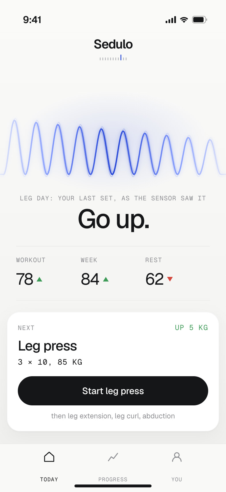
Stronger, and you can see it.
Turn your gym into a smart gym.
Visualisation | The website
The first screen
The sensor in its glow, one big word, one line and two buttons. On a phone, the same screen, stacked.

Visualisation | The app


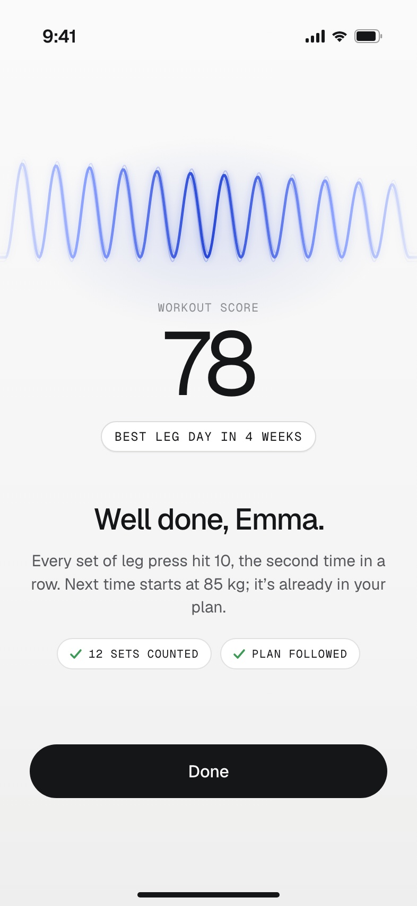
Visualisation | The gym floor
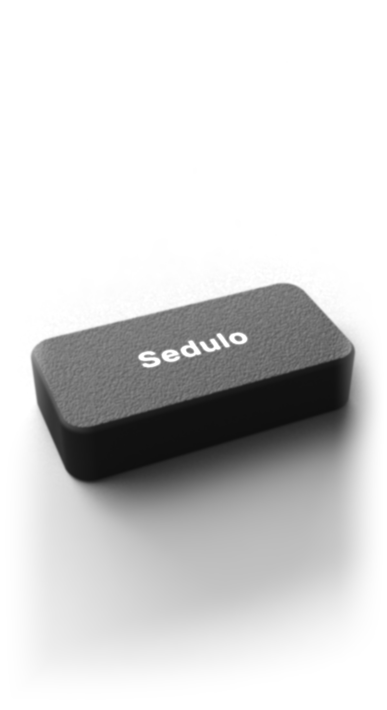
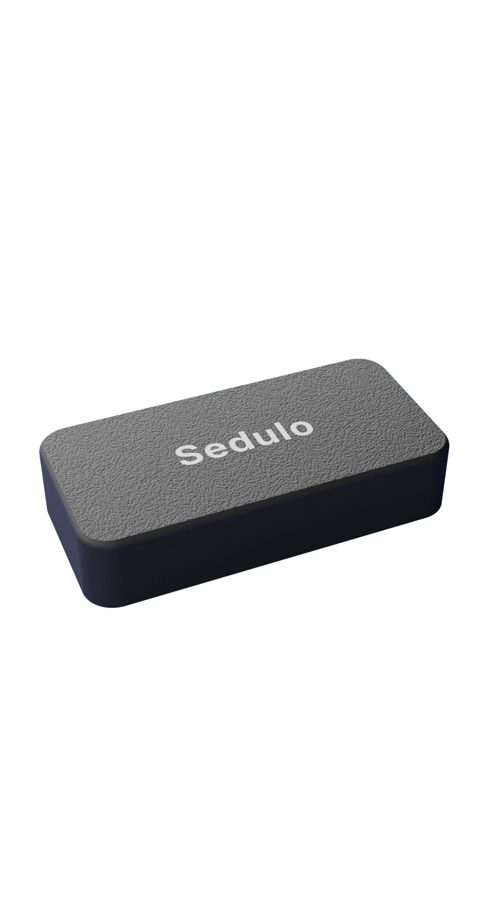
This machine counts every rep.
Reps, sets, rest and how hard each set was, without a single tap.
Smart machine
Every rep countedOn the gym floor
A poster for the wall by the machines, and a small sticker on each machine. Both say one thing, in the brand’s voice: this machine counts.
Poster: A2, the sensor in its glow. Sticker: 60 mm, Iron, the symbol and two lines.